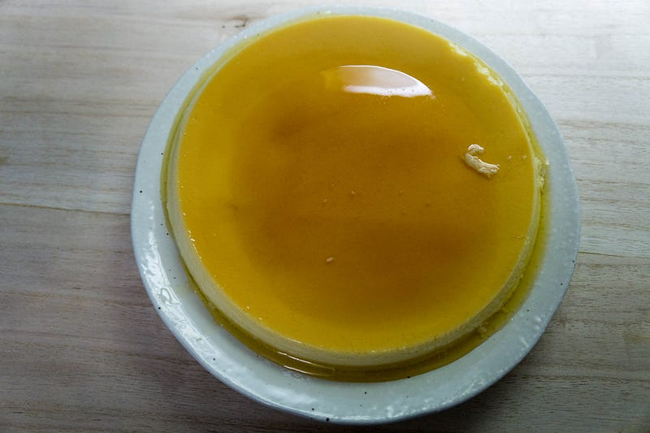
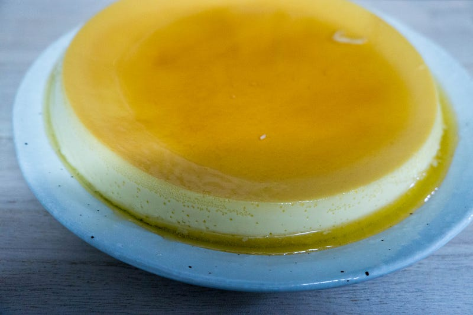
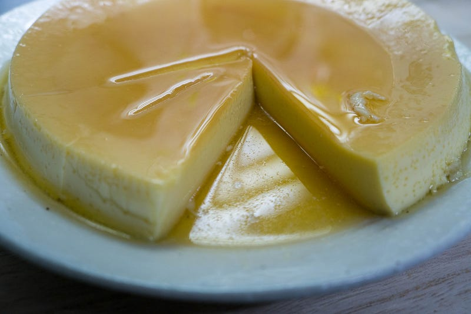
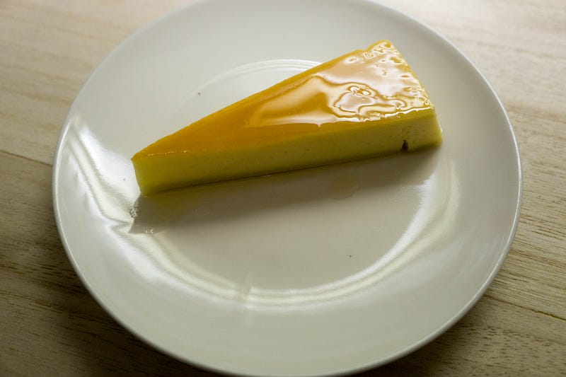

ブラジルプリン（Pudim de Leite)を（妻と子供達が）作る
ブラジルプリン（Pudim de Leite)を（妻と子供達が）作る
ちょっと前に僕の誕生日のために作ってくれたブラジルプリンことPudim de Leiteを妻がまた作ってくれた。今度は子供達もちょっと手伝ってくれた。
なお、このプリンは厳密にはプ「リ」ンじゃなくて、プジン、と発音します。
ブラジル人でPudim de Leiteを嫌いな人間なんているんだろうか。甘くて濃くてねっとりとしてて、食後にこれを食べてコーヒーでしめるのが最高にうまい。
自分の好みとしては洋菓子は充分に甘いのがいい。和菓子はまた違う世界だけど、洋風のコースの最後に甘くないデザートがついてコーヒーがつかない、とか意味がわからない。
このプリンはねっとりと甘く、ココナツミルクの風味が効いてるのがポイント。
自分は料理はしても菓子作りをしない人なので、ブラジルプリンを作るのに挑戦したことさえなかったが、妻曰く作り方そのものは簡単らしい。参考にしたのはこのサイトとのこと：
◆◇ ブラジルプリン ◇◆ （約１８ｃｍ円型） .............................................................................................www.brasil-marukajiri.com
材料は基本的に以下の通り
- 練乳
- ココナッツミルク
- 卵
- 牛乳
これらをまぜて、型に入れて40分ほどオーブンで焼く。終了。あとはカラメルを作るのに砂糖と水。子供達も食べるので、カラメルは苦み控えめ。
なお、上記レシピではココナッツミルクが必須になってないけど、これ必須だから！これいれないとブラジルプリンじゃないものになる。
この週末は特に子供達にアクティビティを用意できなかったので、この料理をした。子供達は卵を割ったり、かき混ぜたりする部分で手伝ってくれた（いじっただけ、ともいう）。もちろん子供達にやらせたあと、ちゃんとブレンダーで混ぜた。
焼けたプリンはあら熱を取ったあと、冷蔵庫へ。
よく冷えたら、いよいよプリンを取り出す。こういう度胸が要る仕事は何故か俺に回ってくる…
冷やしたプリンの型の形に沿うように軽くナイフで切れ目を入れて、お皿を蓋をした状態で型をひっくり返す。深くナイフを入れるのは一箇所だけでいい。そこから良い感じで物理法則が働いて、皿の上にプリンが降りてくる。

ふぅうううう！！！テンションあがる！家にある型の都合で直系20cm、高さ2~3cmほどの見事なプリンができあがった。

ちなみに単純な好みで言うと、高さは5cmくらいほしいけど、それはきっとすごい大量に材料いるんだろうな…
折角きれいに落とせたので、なるたけキレイに切ってみる。

子供達も「あまーーーい！」と感激しつつ食べてくれた。

はー、ブラジルプリンって幸せだ。妻もガイジンもどきと結婚してしまって、こんな異国の料理を食べさせられたり、作らされるようになるとは思わなかっただろうなー。
なおプリンとは関係ないが、今日の夕飯は以前もやったサーモンの西京漬け風低温調理であった。
低温調理のステーキでは圧倒的な勝利を収めてきた (1) (2) ので、今度は魚に挑戦したい。刺身用のサーモンならいけるはずだ。medium.com
今回はこれまでの教訓を生かし、漬け時間が少ないのを補うために味付けを濃いめにすること、そして低温調理した後の残り汁（味噌）を使ってお好みであとから漬けられる味噌ソースを作ったところ、大変おいしくできた。
サーモンの浸かり具合は完全にサーモンの部位の厚みに比例するので、腹部分は味がわりと染みていたものの、厚みのある背部分は香りだけだったので、このソースがあったことで自由に調節できてよかった。味噌ソースで食べる半生サーモン、異常にうまいので、お試しあれ（もちろん、ちゃんと生食可能なヤツにしとけよ！）